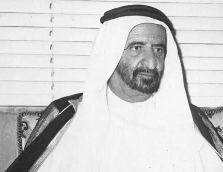

بداية نشأته
وُلد الشيخ راشد بن سعيد آل مكتوم عام 1912 في إمارة دبي، في أسرة آل مكتوم الحاكمة التي عُرفت بالحكمة والقيادة. والده هو الشيخ سعيد بن مكتوم آل مكتوم، حاكم دبي آنذاك، الذي نهل منه الشيخ راشد أصول الإدارة وفنّ القيادة. نشأ في بيئة خليجية أصيلة تتجذّر فيها قيم الكرم، والشجاعة، والوفاء، والإيمان، فكوّنت شخصيته القيادية التي حملت رؤيةً طموحة لدبي، وجعلت منه أحد أبرز بناة نهضتها الحديثة.
